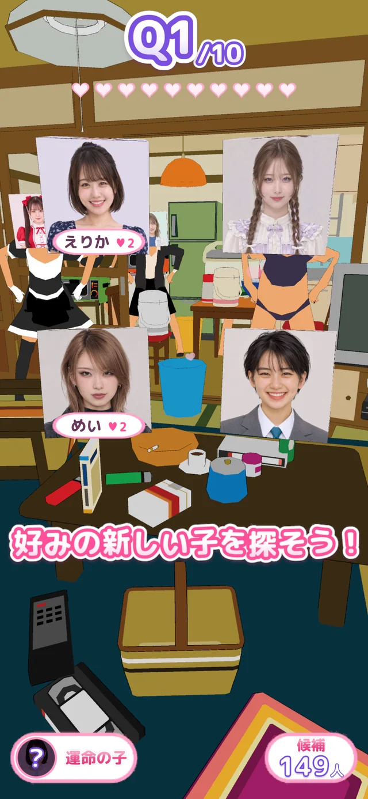
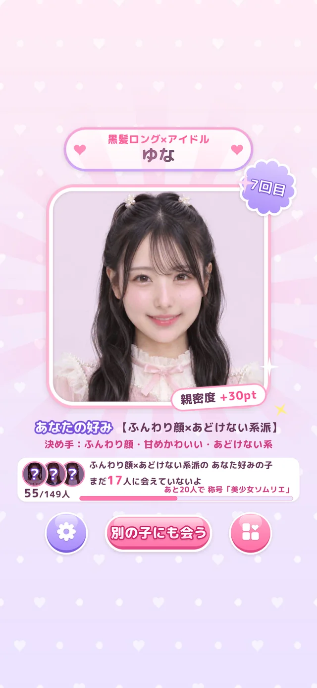
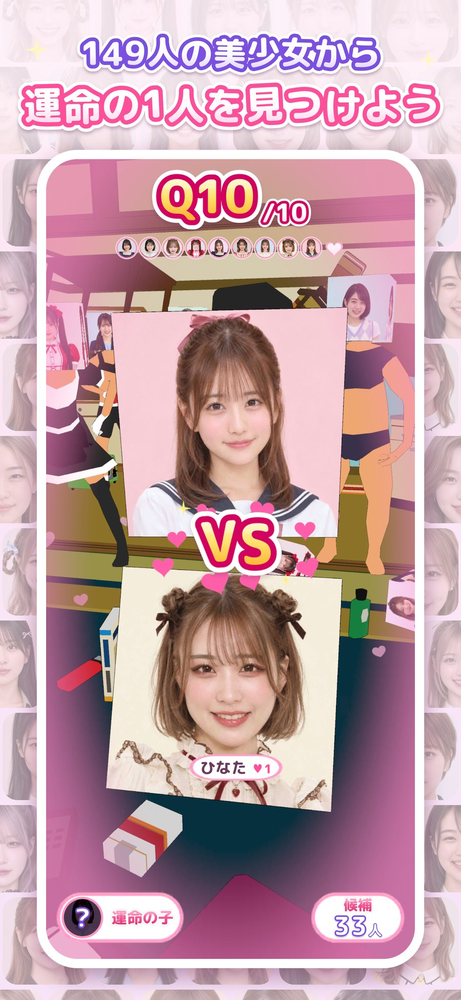
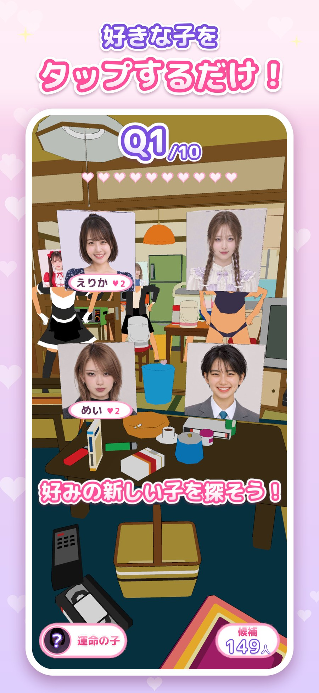
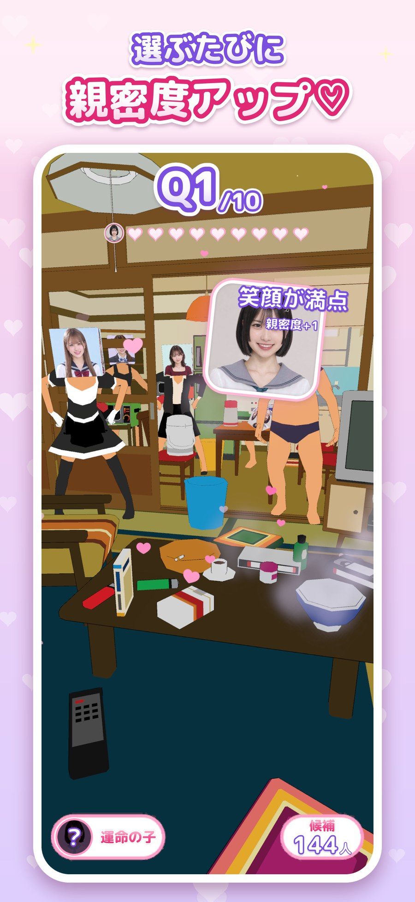
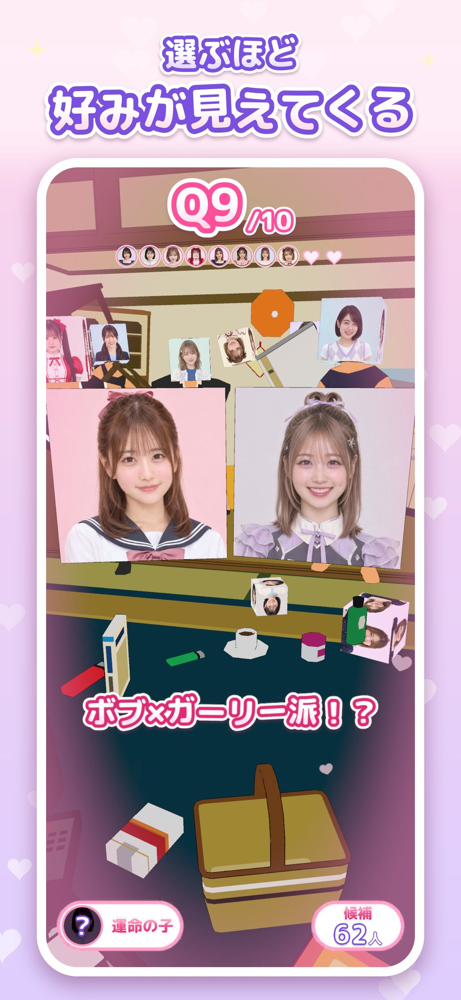
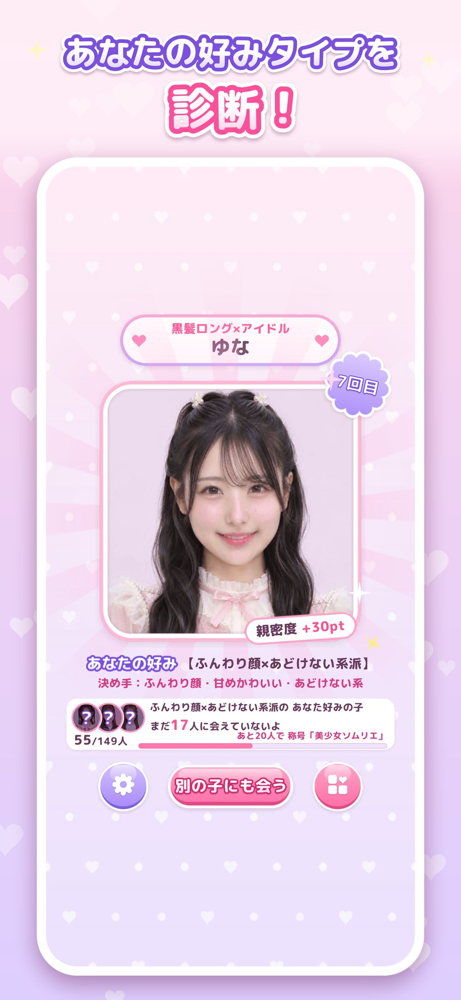
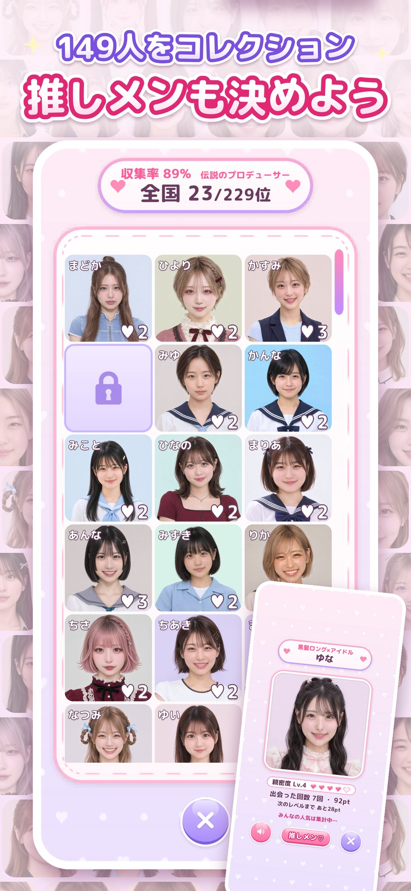
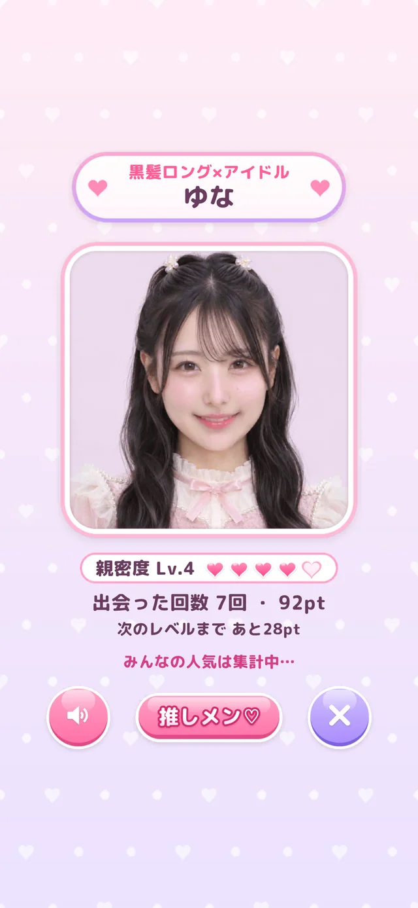

4人から、運命の2択へ。
はじめは4択、次は3択、最後は2択。顔立ち・髪型・服装・雰囲気を見て、10回選ぶと好みのタイプがわかります。
全員のビジュアルも、出会い方も、新しく。
顔立ち、髪型、雰囲気。気になる子を、直感でタップ。4択→3択→2択と選ぶうちに、あなたの好みが見えてきます。出会った子を集めて、もっと仲良くなろう。

基本プレイ無料・広告なしプランあり。配信バージョンは各ストアをご確認ください。


TRY YOUR TYPE
画像を見て、気になる子をタップ。4択から3択、2択へ進む5問の簡易診断で、好みの雰囲気をのぞいてみよう。
本編のうち16人を使ったWeb限定の簡易体験です。本編とは診断方法が異なり、結果の保存やアプリとの連動はありません。
全149人との出会いはアプリで ↗HOW TO FALL FOR YOUR FAVORITE
はじめは4択、次は3択、最後は2択。顔立ち・髪型・服装・雰囲気を見て、10回選ぶと好みのタイプがわかります。
選んだ子との親密度がアップ。仲良くなると新しいボイスが解放されます。
全149人をコレクション。お気に入りを推しメンに設定したり、毎日変わる「今日の運命の子」に出会ったり。
A CLOSER LOOK
診断も、親密度も、コレクションも。6枚の画面でご紹介。左右にスワイプして見られます。







MORE THAN A COLLECTION
一人ひとりに、名前とボイス。親密度を育てて、新しい声を解放。お気に入りの子を推しメンにして、今日の運命の子との出会いも楽しもう。
あなたのコレクションをはじめる ↗FIND YOUR ONE / 149
iPhone・Androidで基本プレイ無料。配信バージョンや広告なしプランの詳細は各ストアへ。
A FEW MORE THINGS
1〜5問目は4人、6〜7問目は3人、8〜10問目は2人から、好みの子を選びます。全10問の選択から、149人の中でのあなたの好みタイプを診断します。
全部で149人です。一人ひとりに名前とボイスがあり、出会った子をコレクションできます。親密度が上がると新しいボイスが解放され、推しメンの設定も楽しめます。
毎日変わるキャラクターとの出会いです。今日の運命の子はアプリで確認できます。
Web版は16人の画像を使い、5回の選択で好みの雰囲気を表示する簡易体験です。本編とは診断方法が異なり、結果の保存・アプリとの連動・キャラクター解放・親密度・ボイスはありません。
ダウンロードと基本プレイは無料で、広告なしプランもあります。対応端末や配信中のバージョン、プランの詳細は各ストアでご確認ください。